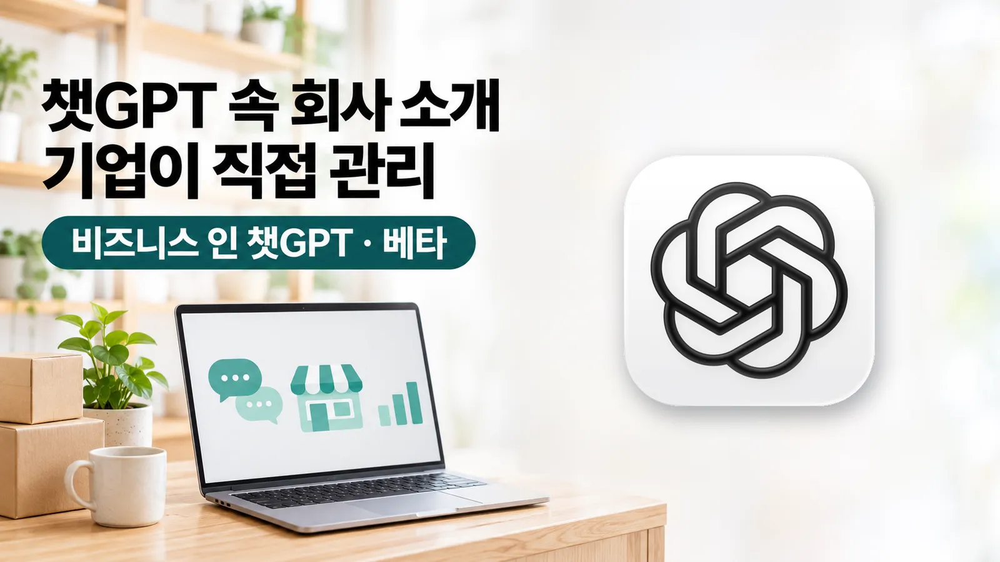

이지 자료실 · AI 창업
'비즈니스 인 챗GPT' 베타, 회사 정보·상품 가격·재고를 기업이 직접 관리
작성 · 글 이지연 · 오픈AI 공식 발표(11.10)와 뉴시스·AI타임스·벤처비트 보도(11.10~11) 기준
안녕하세요, AI융합 예술교육가 이지쌤 이지연입니다. 오픈AI가 현지시각 11월 10일 '비즈니스 인 챗GPT(Businesses in ChatGPT)'를 베타(시험판)로 공개했습니다. 기업이 챗GPT에 나오는 회사 소개와 상품 정보를 직접 관리하는 기능으로, 국내 매체들은 11일 한국 기업도 쓸 수 있다고 보도했습니다. 이 글에는 이용 대상, 고칠 수 있는 정보와 볼 수 있는 수치, 시작 단계를 오픈AI 공식 발표와 국내외 보도를 기준으로 정리했습니다.
- 오픈AI는 현지시각 11월 10일 기업용 기능 '비즈니스 인 챗GPT'를 베타로 공개했습니다. 기업은 관리 화면 '비즈니스 허브(Business Hub)'에서 인증을 마친 뒤 회사 정보를 고치고 가격·재고가 담긴 상품 목록(상품 피드)을 연결할 수 있습니다.
- 비즈니스 허브는 한국을 포함해 챗GPT가 서비스되는 지역에서 요건을 갖춘 기업이 쓸 수 있습니다. 회사를 대신해 고객 질문에 답하는 '비즈니스 에이전트'는 미국의 요건을 갖춘 전자상거래·온라인 서비스 기업에 먼저 제공됩니다.
- 기업은 챗GPT에서 자사가 언급된 횟수, 누리집 링크 클릭 수, 누리집이 인용된 대화의 주요 주제를 모은 수치로 볼 수 있습니다. 오픈AI는 개별 이용자의 대화와 비즈니스 에이전트 채팅 내용은 기업에 넘기지 않는다고 밝혔습니다.

| 무엇을 | 비즈니스 인 챗GPT 베타(비즈니스 허브·비즈니스 에이전트) |
|---|---|
| 누가 | 오픈AI |
| 언제 | 2026년 11월 10일(현지시각) 베타 공개, 국내 보도 11월 11일 |
| 비즈니스 허브 대상 | 한국 포함 챗GPT 서비스 지역에서 요건을 갖춘 기업. 회사 소유자나 대표할 권한이 있는 사람이 신청 |
| 비즈니스 에이전트 대상 | 미국의 요건을 갖춘 전자상거래·온라인 서비스 기업부터 |
| 고칠 수 있는 정보 | 회사 소개 등 주요 정보, 가격·재고가 담긴 상품 피드 |
| 볼 수 있는 수치 | 언급 횟수, 누리집 클릭 수, 누리집이 인용된 대화의 주요 주제(모은 수치만) |
| 요금 | 발표를 옮긴 보도에 안내 없음. AI타임스·벤처비트는 출시 초기 무료라고 보도 |
1. 비즈니스 인 챗GPT는 무엇인가
비즈니스 인 챗GPT는 기업이 챗GPT 안에서 회사 정보를 관리하고, 이용자들이 챗GPT에서 회사를 어떻게 만나는지 확인하는 기능입니다. 정보를 고치고 수치를 보는 '비즈니스 허브'와, 회사가 정한 정보와 지침에 따라 상품·정책 질문에 답하는 '비즈니스 에이전트'로 나뉩니다.
오픈AI는 사람들이 챗GPT로 상품과 서비스를 찾고 비교하면서 챗GPT가 AI를 통해 사람과 기업이 이어지는 곳이 되었다고 설명했고, 이번 출시를 기업이 챗GPT에 더 깊이 들어오는 초기 단계라고 밝혔습니다. 오픈AI가 밝힌 챗GPT 주간 이용자는 12억 명입니다.
2. 누가, 언제부터 쓸 수 있나
비즈니스 허브는 한국을 포함해 챗GPT가 서비스되는 지역에서 요건을 갖춘 기업이 등록과 인증을 거쳐 쓸 수 있습니다. PPC Land와 폰아레나에 따르면 자격은 업종, 위치, 인증·신뢰성 검사 결과에 따라 정해지고, 신청은 회사를 소유하거나 대표할 권한이 있는 사람이 합니다. 오픈AI 엔터프라이즈 고객과 광고주는 오픈AI 담당자를 통해 등록할 수 있고, 쇼피파이(쇼핑몰 제작 서비스) 판매자는 스토어를 연결할 수 있습니다.
비즈니스 에이전트는 미국의 요건을 갖춘 전자상거래·온라인 서비스 기업에 먼저 제공됩니다. 프로필 인증을 마친 기업이 에이전트를 만들어 시험한 뒤 공개하는 순서입니다. 1인 사업자나 개인사업자가 신청할 수 있는지는 이번에 확인한 보도 어디에도 나오지 않았습니다.
3. 기업이 고칠 수 있는 정보와 볼 수 있는 수치
인증을 마친 기업은 회사 소개 같은 주요 정보를 고치고, 상품을 파는 기업은 가격·재고가 담긴 상품 피드를 연결할 수 있습니다. 이용자가 관련 상품을 물으면 챗GPT는 이 정보를 참고해 답합니다.
볼 수 있는 수치는 챗GPT에서 회사가 언급된 횟수, 챗GPT에서 회사 누리집으로 넘어간 클릭 수, 회사 누리집이 인용된 대화들의 공통 주제입니다. AI타임스와 벤처비트는 최근 28일 기준 집계라고, 지디넷코리아와 디지털투데이는 프로필 조회 수도 나온다고 전했습니다. 서치엔진라운드테이블과 PPC Land가 옮긴 화면 안내문에는 클릭 수가 실제 방문이나 구매를 확인해 주지는 않는다고 적혀 있습니다.
4. 개인정보와 추천 독립성에 대해 오픈AI가 밝힌 것
오픈AI는 수치를 일정 기준 이상의 대화나 상호작용이 모였을 때만 묶음 형태로 제공하고, 개별 이용자의 질문·대화와 비즈니스 에이전트 채팅 내용은 기업에 주지 않는다고 밝혔습니다. 그 기준이 몇 건인지는 공개되지 않았습니다.
오픈AI는 비즈니스 에이전트와의 대화에 표시를 붙여, 이용자가 원래 하던 챗GPT 대화나 챗GPT의 독립적인 답변과 따로 보여 준다고 밝혔습니다. 뉴시스와 이데일리는 오픈AI가 기업 정보를 참고하더라도 상품 비교와 추천은 독립적으로 한다고 밝혔다고 전했고, 벤처비트와 폰아레나는 등록이 답변 속 더 높은 자리나 판매 증가를 보장하지 않는다고 전했습니다. 기업은 비즈니스 에이전트를 챗GPT 광고의 연결 대상으로 쓸 수 있고, 광고 자리는 답변과 구분해 표시됩니다.
5. 시작하는 단계
오픈AI 도움말 「Setting up your business on ChatGPT」는 접속이 막혀 직접 열지 못해, 실제 신청 화면을 다룬 보도들에서 맞춰 본 순서를 옮깁니다.
- 비즈니스 허브 열기챗GPT의 비즈니스 허브(chatgpt.com/business-hub)를 엽니다.
- 회사 찾기회사 이름을 검색해 목록에서 고르거나, 목록에 없으면 새로 만듭니다.
- 회사와의 관계 확인회사 대표 전화번호로 받는 전화·문자나 누리집 도메인 확인 등을 거칩니다. 디지털투데이에 따르면 오픈AI 벤지 쇼마이어 수익화 담당 부사장은 시장과 기업 유형에 따라 여러 인증 방식을 쓴다고 말했습니다.
- 본인 확인승인 뒤 관리자는 따로 본인 확인을 거쳐야 정보 수정, 상품 피드 연결, 수치 보기, 에이전트 만들기를 할 수 있습니다. PPC Land는 정부 발급 신분증이 필요하다고 전했습니다.
- 정보 관리와 에이전트회사 정보를 고치고 상품 피드를 연결합니다. 미국의 해당 기업은 에이전트를 만들어 시험한 뒤 공개합니다.
6. 아직 공개되지 않은 것
요금은 오픈AI 발표를 옮긴 보도들에 나오지 않습니다. AI타임스와 벤처비트는 출시 초기 프로필 등록·관리와 에이전트 공개가 무료라고 보도했고, 벤처비트는 이를 미국 매체 디지데이가 전한 쇼마이어 부사장의 설명으로 소개하며, 그가 나중에 요금을 받을 가능성은 닫지 않았다고 덧붙였습니다.
업종별 세부 자격 기준과 비즈니스 에이전트의 한국 제공 일정도 나오지 않았습니다. 오픈AI는 제공 지역과 업종을 넓히고 요구가 복잡한 기업용 도구를 만들겠다고 밝혔지만 날짜는 밝히지 않았습니다.
참고 자료
- OpenAI 「Introducing Businesses in ChatGPT」 (2026.11.10)
- 뉴시스 「챗GPT 속 회사 소개, 기업이 직접 고친다…오픈AI, '비즈니스 인 챗GPT' 출시」 (2026.11.11)
- 이데일리 「오픈AI, 기업도 챗GPT 입점 시대…상품 올리고 고객 반응 확인한다」 (2026.11.11)
- AI타임스 「오픈AI, 챗GPT에 기업 프로필·AI 에이전트 도입…고객 접점 확대」 (2026.11.11)
- VentureBeat 「OpenAI lets you claim your business in ChatGPT and set up a custom agentic AI customer sales rep」 (2026.11.10)
- PPC Land 「Businesses gain ChatGPT click and mention counts in OpenAI's Business Hub」 (2026.11.11)
이 글은 2026년 11월 12일에 확인해 정리했습니다. 오픈AI 공식 발표 「Introducing Businesses in ChatGPT」(11월 10일)는 11월 12일 브라우저로 열어 주간 이용자 12억 명, 비즈니스 허브의 인증·정보 수정·상품 피드, 세 가지 수치와 개인정보 기준, 비즈니스 에이전트의 미국 우선 제공과 광고 연결을 맞춰 봤습니다. 오픈AI 도움말은 접속이 막혀(403) 직접 열지 못했습니다. 이용 지역, 고칠 수 있는 정보, 세 가지 수치, 개인정보와 추천 독립성, 에이전트의 미국 우선 제공은 국내 5개 매체(뉴시스·이데일리·디지털데일리·지디넷코리아·AI타임스)와 PPC Land·폰아레나 가운데 여러 곳에서 맞춰 봤고, '한국 포함'은 국내 매체에 나온 표현입니다. 신청 단계는 벤처비트·PPC Land·서치엔진라운드테이블을 맞춰 봤고, 정부 발급 신분증은 PPC Land, 출시 초기 무료는 AI타임스·벤처비트, 쇼마이어 부사장의 인증 발언은 디지털투데이에 나옵니다. 1인 사업자 자격과 수치 공개 기준 건수는 공개되지 않았습니다.
함께 읽을 글